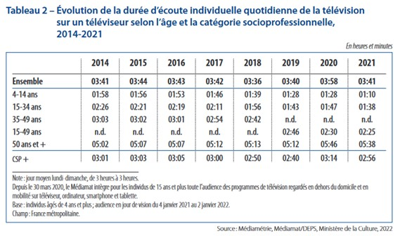
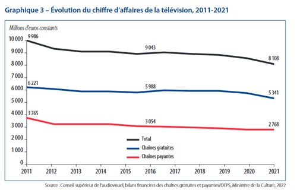

SA CREATION
Gulli est une chaîne de télévision française gratuite, en place depuis le 18 novembre 2005, spécialisée dans la diffusion de programmes jeunesse. La chaîne est née d'une collaboration entre France Télévisions, ayant déjà investi énormément dans les programmes pour enfants, et la filiale du groupe de médias Lagardère, Lagardère Active, illustrée dans les médias jeunesse depuis 20 ans avec sa chaîne CanalJ. En octobre 2014, Lagardère Active rachète les 35% de parts de France Télévision pour 25 millions d’euros. Elle appartient depuis septembre 2019, suite au rachat pour 215 millions d’euros de Lagardère Active, au groupe de télévision privé M6, rejoignant ainsi, avec Tiji et CanalJ, l’autre chaîne jeunesse du groupe, M6Kid. Le groupe qualifiera le projet de “réelle opportunité stratégique” permettant, entre autres, “le développement de la puissance des programmes” et “un renforcement de la régie publicitaire”. Diffusant d'abord de 6h30 à 23h, la chaîne est passée de 6h à 00:30 le 10 décembre 2007, pour finalement, en septembre 2008 diffuser 24h/24. Elle est disponible en France sur la TNT, sur la télédistribution par câble, les chaînes satellitaires, et en IPTV, par Internet.
SON DEVELOPPEMENT
D’abord lancée à destination des enfants francophones de 4 à 14 ans, la chaîne se diversifiera rapidement dans sa démographie. Ainsi, en septembre 2009, elle lance la chaîne Gulli Russie (renommée en 2015 en Gulli Girl) qui diffusera le contenu de la chaîne Gulli, doublés en russe et sans sous-titres, ainsi que des programmes originaux à destination des jeunes filles âgées de 4 à 17 ans. La chaîne sera diffusée dans 12 puis 9 pays de l’Europe de l’Est et le groupe lancera Tiji Russi, également localisée en Russe. Les deux chaînes auront un modèle économique payant, et combineront à elles deux 7,22 millions d’abonnés en Juin 2012 . Elle annonce également en 2010 le départ du service Gulli Replay, service de rattrapage accessible depuis smartphone et tablette depuis l’application Gulli. Fin 2011, le service est disponible en tant que chaîne sur les offres télévisées des principaux FAI français. Elle lance Gulli Africa en mars 2015 à destination de 22 pays africains francophones d’Afrique subsaharienne, avec pour objectif de devenir « la chaîne n°1 pour les enfants en Afrique », visant les enfants de 3 à 12 ans. Elle est disponible depuis l’offre par abonnement de la chaîne télévisée française privée Canal +, ‘Les Bouquets Canal+’, comptant en 2015 plus d’1,5 million d’abonnés. Elle diffuse du contenu européen, international ainsi que des productions africaines, ces dernières représentant 15 à 30% du volume de diffusion de la chaîne. Tous les programmes sont présentés exclusivement en langue audio française. En 2016, sur tout support confondu, Gulli affichait 30 millions de vues en moyenne par mois. La chaîne annonce le lancement Gulli Bil Arabi en juin 2017 couvrant 18 pays d’Afrique du Nord et du Moyen-Orient, par l’intermédiaire de l’opérateur de télévision satellite basé aux Emirats Arabes Unis, My-HD. Gulli est désormais disponible dans 45 pays. En mai 2020, le service My-HD ferme ses portes. Gulli Brasil est lancée le 9 août 2020 au Brésil, en partenariat avec InteracTV et via l’opérateur satellite brésilien BluTV. La chaîne réalise ainsi sa première extension vers les Amériques. Elle sera également disponible au Luxembourg via Post TV. Gulli Brasil fermera ses portes le 18 juin 2023. Elle lancera en janvier 2022 Gulli Prime, comptant sur un nouvel habillage et de nouveaux programmes destiné aux 15-49 ans pour toucher un public plus adulte, tout en restant accessible aux plus jeunes, sur la chaîne principale à partir de 21h. Elle s’adresse à « La génération Gulli, public qui a grandi avec Gulli et qui commence à devenir parent » avec des programmes aux thèmes variés mais « feel good ». Gulli Max, lancée le 8 juillet 2014, est d’abord une application payante, mise en place avec l’éditeur Chocolapps, permettant de visionner plus de 1200 dessins animés et de jouer à 26 jeux jeunesse et dérivés du catalogue de la chaîne, moyennant un abonnement de 5€/mois. Au 1er avril 2018, Gulli Max devient un service payant de vidéos à la demande (SVOD) qui permet de créer jusqu’à 10 profils différents pour profiter en illimité du catalogue sans publicité. Pour 3€/mois et sans engagement, il permet le visionnage sur 4 écrans simultanés, ainsi que le visionnage de Gulli Replay sans publicité. Il permet également de télécharger localement le contenu souhaité, de visionner la chaîne en direct, de jouer à des jeux et la mise en place très simple d’un contrôle parental. L’application est disponible en France, Suisse, Belgique et Luxembourg. Elle fait ainsi concurrence à la plateforme de SVOD TFOU Max, lancée en février 2015 par le groupe TF1 pour sa chaîne jeunesse TFOU, ainsi qu’aux plateforme plus généralistes, Netflix et feu Canalplay ou à la plateforme publique France.tv, alors nommée pluzzVAD. Après cette introduction à l’entreprise, penchons-nous sur le marché dans lequel elle opère, en divisant celà en deux groupes. Le marché de la télévision, et le marché du divertissement jeunesse.
LES CHIFFRES EFFECTUES
La Télévision :
Tout d'abord, le marché de la télévision. En 2021, 91% des foyers sont équipés d’une télévision, restant le premier écran au sein du foyer devant l’ordinateur (86%) et la tablette (46%). Au quatrième trimestre de 2021, on compte en moyenne 5.7 écrans par foyer. Les moyens de diffusion sont donc variés et nombreux. La réception de la télévision se fait principalement par la TNT (22%) et par Internet (39%). Toujours en 2021, la durée d’écoute moyenne et individuelle de la télévision pour les personnes de 4 ans et plus était de 3h41 par jour. Toutes les démographies s’éloignent petit à petit de la télévision, à l’exception de la population de 50 ans et plus. Cette population occupe 68% de la part d’audience des chaînes de télévision linéaire alors qu’en 2010 elle en représentait moins de 50%.
La part des chaînes nationales historiques représente 60% des parts d’audience. On y inclut TF1, France2, France3, Canal+, France5, M6 et Arte. Le reste de l’audience étant réalisée par les autres chaînes de la TNT. Les chaînes gratuites continuent d’attirer plus d’audience que les chaînes payantes.
La télévision perd en influence et affluence au fil des années, en dépit des plateformes de rattrapage, de SVOD et les réseaux sociaux. Les premières permettant de visionner un contenu sans plages horaires précises, les seconds permettent, en fonction de l’abonnement, de visualiser du contenu sans s’inquiéter de coupures publicitaires, à n’importe quel moment et de profiter de programmes originaux en fonction de la plateforme. En 2020, le chiffre d'affaires de l’ensemble des chaînes nationales gratuites et payantes s'élève à 8.31 milliards d’euros, soit un recul de 19% en 10 ans. Les 25-49 ans adoptent une attitude mixte face aux écrans, mélangeant réseaux sociaux, télévision linéaire et SVOD. Jusqu’à 24 ans en revanche, la télévision est presque ignorée.
La Télévision Jeunesse :
La première chaîne jeunesse en France est CanalJ, lancée par le groupe Lagardère en 1985, faisant de la France le deuxième pays à lancer une chaîne à destination exclusivement jeunesse. Suite à l’arrivée de la TNT, Lagardère lance sa deuxième chaîne visant les enfants, Gulli. En presque 20 ans d’existence, et avec la diffusion de nombreux programmes à succès, la chaîne est devenue très familière dans le paysage audiovisuel français (PAF). Gulli est, devant France 4, la première chaîne de consommation de médias animés quel que soit l’âge du public. Elle représente plus de 49% du temps d’écoute de la télévision nationale des 4-10 ans.L’animation, genre principal du contenu de la chaîne, représentait 20.6% de la consommation audiovisuelle des enfants de 4 à 14 ans en 2021 ( 25.3% pour les 4-10 ans). En novembre 2022, à 5 ans et demi, 56% des enfants utilisent des écrans numériques, tablettes ou smartphones, et 16% à hauteur de 1h12 par jour. Au même âge, 98% des enfants regardent la télévision. Hors télévision, ces supports profitent également à Gulli par l’intermédiaire de leur site Gulli.fr, de Gulli Replay ou de Gulli Max. Lors d’une possible fusion entre les groupes M6 et TF1, discutée en 2021 et 2022, les deux groupes s’étaient accordés à “garder” Gulli. En effet, si les deux groupes avaient fusionné, ils auraient alors représenté 10 chaînes. Cependant, la loi de 1986 sur la liberté de communication française n’autorise à un groupe la possession de 7 chaînes au maximum afin d’éviter trop de concentration et l’apparition de monopoles. Ils avaient alors l’intention de se destituer de TFX, 6ter et de Paris Première. En plus de sa chaîne, elle est ancrée dans le quotidien de son audience sous la forme de nombreux produits et services dérivés. En 2011, Gulli lance son premier GulliParc, aire de jeux à destination des enfants, située dans des zones commerciales, ils permettent aux parents de laisser leur enfant jouer pendant qu’ils font le tour des magasins. En 2023, c’est un treizième parc qui à été ouvert à Conflans (78) dans les Yvelines. La chaîne lance également la tablette Gulli, permettant aux parents de laisser entre les mains de leurs enfants un objet dans lequel ils pourront avoir confiance. Gulli, le Mag est un magazine publié tous les deux mois depuis juillet 2008 contentant des jeux, des bandes dessinées, des articles de thèmes divers, des produits dérivés, jouets, et posters. Gulli investit un peu dans le secteur de l’animation avec, par exemple, Les espoirs de l’animation, concours de plus de 20 éditions, qui permet de mettre en avant des productions et des talents. La chaîne invite des étudiants en animation à créer, en un mois, de courts films d'une minute 15 secondes sur un thème particulier (en 2023 : “Le changement ? Même pas peur !”), qui seront ensuite regardés et départagés par le public et par un jury professionnel lors du Festival d’Annecy. C’est un événement réalisé en partenariat avec le CNC (Centre National du cinéma et de l’image animée), la SACD (Société des auteurs et compositeurs dramatiques) et AnimFrance, syndicat dédié au secteur de la production audiovisuelle et cinématographique d’animation. En janvier 2023, le groupe M6 signe un accord sur 3 ans l’engageant à renforcer ses engagements en matière de productions audiovisuelles françaises et européennes. Il s’engage à investir 15% de son chiffre dans ces productions, dont 70% sera réservé à la production d'œuvres indépendantes. Il s’agit du pourcentage minimum indiqué lors du rapport CSA de 2019. (Article 3-2-2 II) Il s'engage également à verser 11.5% de son chiffre d'affaires dans des œuvres patrimoniales, taux jugé “trop bas” par la SACD qui juge que c’est “en-deçà de la responsabilité d'un opérateur de premier plan”.